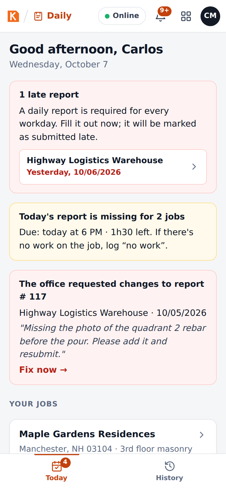
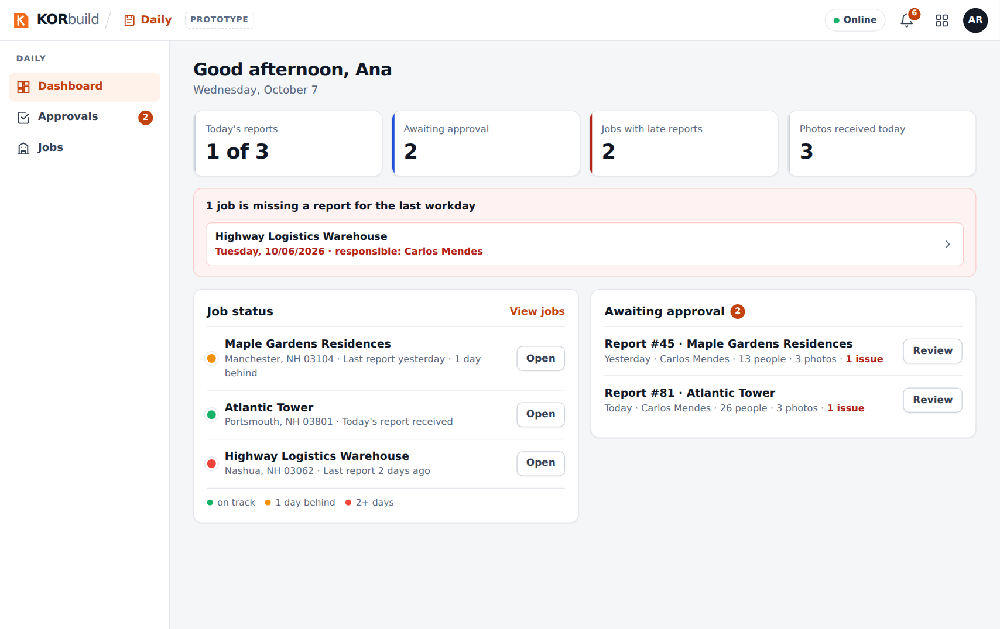

Daily is the daily construction report (in Portuguese, RDO). Every workday, the person in charge on site records the weather, the crew, the equipment, the work performed, the issues and the photos. The office reviews and approves the report, and the approved report is sealed and shared with the client as a link or a PDF.
Why it matters
- A record that holds up. When a client disputes a delay, the daily reports are the contractor's evidence: rain that stopped the pour, a late delivery, a missing inspection. Photos carry date, time and GPS inside the image, and the approved report is sealed.
- Reports that actually get done. Each job has a person responsible for its report, a daily deadline (6 PM) and reminders. The office sees the next morning which jobs did not report.
- Minutes, not an evening. On the phone, the foreman copies yesterday's report, adjusts the crew, dictates what was done and takes the photos. It works without signal.
Who uses it
| Who | Where | What they do |
|---|---|---|
| Foreman / superintendent | Phone | Fills out and submits the report of each job, every workday; fixes reports sent back by the office. |
| Office (admin, project manager) | Computer | Follows the jobs on the dashboard, reviews, approves or requests changes, shares with the client. |
| Client (owner or general contractor) | Any browser | Opens the link of the approved report, checks it is authentic and downloads the PDF. No account needed. |
Who can do what depends on the access role: see Roles and permissions.
The main screens
| Screen | Who sees it | What it shows |
|---|---|---|
| Today | Field | The jobs of the day, late reports, what is still missing today and requests for changes. |
| History | Field | Every report you filled out, newest first. |
| Report (editor) | Field | The report form: weather, crew, equipment, work performed, issues & delays, photos, notes. |
| Dashboard | Office | Numbers of the day, job status (green, yellow, red), jobs missing a report, approval queue. |
| Approvals | Office | Reports awaiting approval, reports sent back for changes, approved reports. |
| Jobs | Office | Every active job with its status; each job opens its reports and its schedule. |
| Client link | Client | The approved report, read-only, with the authenticity check and the PDF. |


How a report moves
| Status | What it means | Who acts next |
|---|---|---|
| Draft | Being filled out; saved on the phone. | Field: submit. |
| Saved on this device | Submitted without signal; uploads by itself when the connection comes back. | Nobody: automatic. |
| Awaiting approval | Received by the office. | Office: approve or request changes. |
| Changes requested | Sent back with a reason. | Field: fix and resubmit. |
| Approved | Sealed with a verification code. Nobody can change it. | Office: share with the client. |
| No work | The day was logged as "no work" with a reason (rain, holiday…). | Nobody. |
Connected to the other modules
- Crew: when a report starts, the crew can be filled in from the people who clocked in on the job that day (Update from the crew that clocked in).
- Job schedule: each activity of the report can point to a task of the job's schedule with its % complete; when the report is approved, the schedule is updated.
- Jobs are set up once, for the whole company (Settings › Jobs): address, geofence, deadline, who fills out the report and the workdays.